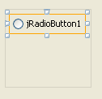
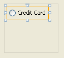
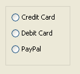
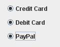
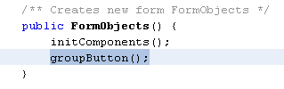
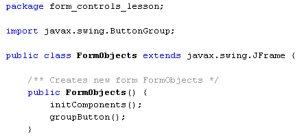
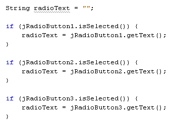
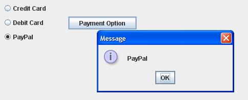

Radio buttons are usually used to select just one item from a list, rather than the multiple items available with check boxes. Let's see how they work.
Drag and drop a panel onto your form. Then locate the Radio Button control in the NetBeans palette. Drag a Radio button onto your new palette. It should look like this:

The default text for the first radio button is jRadioButton1. We'll use our radio buttons to allow a user to select a payment method. So change the text of your radio button to Credit Card. (The text can be changed in the same way as you did for check boxes. Again, we'll leave the variable name on the default of jRadioButton1.)

Add two more radio buttons to the panel. Change the text to Debit Card, and PayPal:

There is, however, a problem with the radio buttons you've just added. To see what the problem is, run your programme again. Now select one of the radio buttons. Try selecting another radio button and you'll find that you can indeed select more than one at the same time:

With our radio buttons, though, we only want the user to select one payment option. To solve the problem, Java lets you to create something called a ButtonGroup. As its name suggest, this allows you to group buttons under one name. You can then add radio buttons to the group. Once you've added buttons to the group, only one option is available for selection.
To see how the ButtonGroup works, add the following method to your code, somewhere near the top:
private void groupButton( ) {
ButtonGroup bg1 = new ButtonGroup( );
bg1.add(jRadioButton1);
bg1.add(jRadioButton2);
bg1.add(jRadioButton3);
}
When you do, you'll see that NetBeans has alerted to you to a problem, and underlined some code in red. It has done this because it can't find a class called ButtonGroup, so can't create a new object from it.
To solve this problem, you need to import the relevant class from the Swing library. So scroll up to the very top of your code, and add the following import statement:
import javax.swing.ButtonGroup;
The red underline should now be gone.
Our groupButton method adds radio buttons to the ButtonGroup object, with the use of the add method:
bg1.add( radio_button_name );
There's one line for every radio button on our form.
We can call the groupButton method from the constructor. That way, the radio buttons will be grouped when the form loads. Add the following method call to your constructor:

The top of your code window should look like this:

Run your form again, and try to select more than one radio button. You should find that you can only select one in the group.
To get at which radio button was selected, again there's an isSelected method we can use.
Add a normal button to your form. When we click this button we'll display a message box stating which radio button was clicked.
Change the variable name of your button to btnRadios. Change the text property to Payment Option.
Now double click your new button to create a code stub. Add the following:

All we're doing here is checking which radio button is selected. We're then getting the text from the radio button and storing it in a variable called radioText.
We can have a message box to display which payment option was selected. Add the following line to the bottom of your button code, just below the final IF statement:
javax.swing.JOptionPane.showMessageDialog( FormObjects.this, radioText );
This line is so long that we've had to reduce the font size! But you've met the JOptionPane in a previous section. The only difference is the first item between the round brackets. Because we were using a console, the first item was null. Now we have:
FormObjects.this
The first item between the round brackets is for the window in which you want to display the message box. Null meant no window. FormObjects.this means this component (the form) of the FormObjects class.
Run your programme again, and select an item from your radio button. Then click your button. You should see something like the following:

In the next part, you'll see how to add menus to your Java Forms.